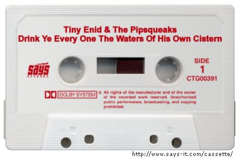

Friday, June the 15th, 2007
back to: title, date or indexes
The other day I had some harsh words to say about the out of print pamphleteer Dobson's song-writing skills. “No one with any sense has ever listened to a Dobson song more than once”, I wrote. Well, it seems I was mistaken. I was rummaging in a satchel that I found abandoned on a canal towpath, and I came upon indisputable evidence that at least one sensible person admired a Dobson song so much that they recorded a cover version of it. The song in question is one of the pamphleteer's settings from the Book of Isaiah.
Hooting Yard readers are a wise bunch, and I would not be surprised to be deluged with letters accusing me of making up the whole satchel-rummaging incident in some foolhardy attempt to chivvy up Dobson's reputation. I therefore arranged for a local snapper to take a snapshot of what I found, as proof.

am now going to have to go and lie down in a darkened, cork-panelled room while I mull over what this extraordinary artefact tells us about (a) Dobson, and (b) Tiny Enid.
Thanks, by the way, to boynton.